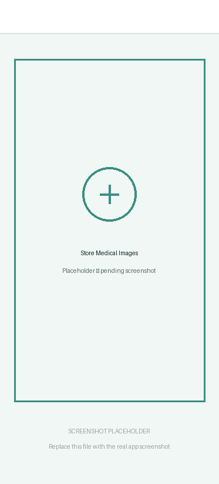
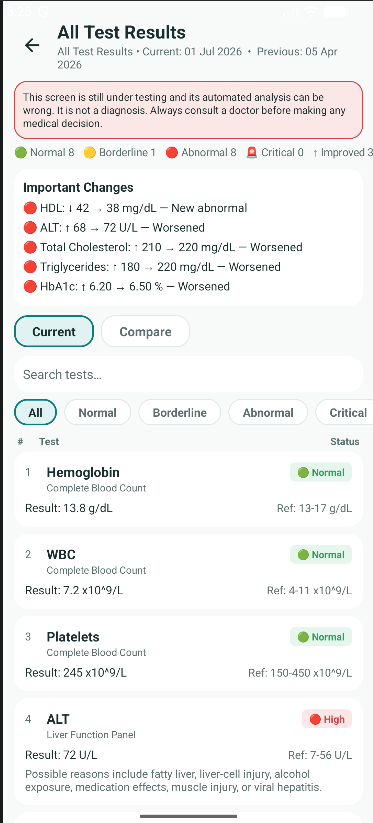
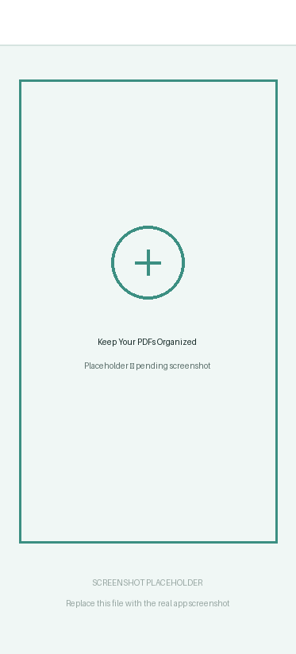
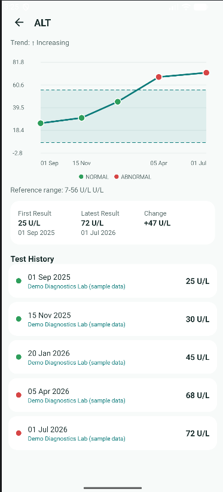
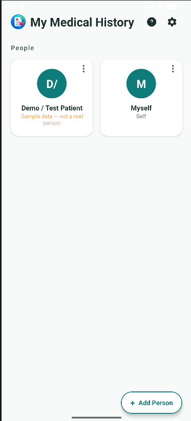
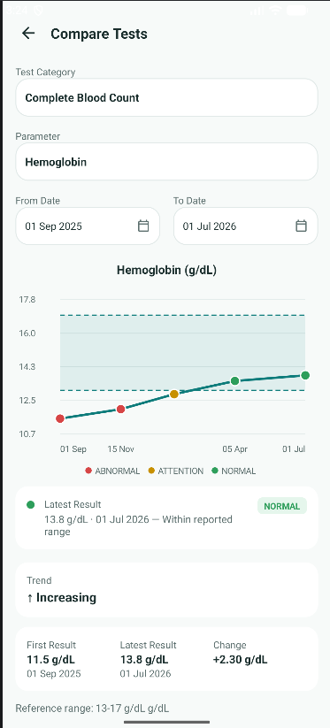

Store Medical Images
Capture and organize medical report images, prescriptions, and other important medical documents.
Family medical record organizer
Keep medical reports, prescriptions, test results, and health history organized for yourself and every member of your family — all in one place.

Built Around Your Medical Records
Keep records structured and easier to find.
Review test results across dates.
Keep control over when medical information is shared.
Product Tour
Real screens from the application.

Capture and organize medical report images, prescriptions, and other important medical documents.

Store original medical PDFs alongside your other health records for easy access when needed.

Organize structured test results and view historical changes through test-wise history and visual progress tracking.
The Core of My Medical History
Storing and arranging your family's medical history is what My Medical History is built around. Each person's records are kept separately within the application so reports and test history can be organized by individual.

The Problem
Reports can end up across phones, WhatsApp conversations, email, paper files, and different folders.
Looking at one test result gives limited historical context. Keeping dated records makes it easier to revisit changes over time.
Families may have medical documents belonging to multiple people. Separate profiles help keep records organized.
Important reports may be difficult to locate when visiting a doctor or reviewing previous medical information.
Historical records can help users see how a particular test result has changed across different dates.
Medical records are highly personal. The application is designed around keeping users in control of their records.
How It Works
Start with yourself or add family members.
Capture images or upload medical PDFs.
Keep structured results associated with the correct person and report.
View historical results, test trends, reports, and supporting information.
Core Features
Keep important medical images and documents organized in one place.
Store original PDF medical reports without converting them into images.
Maintain separate medical histories for different family members.
Keep historical records of recurring tests across multiple dates.
View numerical test results across time through simple historical graphs.
Review available test results and their current interpretation status.
Keep laboratory and diagnostic-center information associated with imported results where available.
Use an external AI assistant to convert medical reports into structured CSV data that can be imported into the application. External AI services have their own privacy policies, and AI-assisted results are not guaranteed to be accurate.
Share medical information when needed while keeping the user's records organized.
Medical Test History & Analysis
When multiple reports are collected over months or years, My Medical History can organize recurring test results into a continuous history.
HbA1c
6.5%
AttentionFasting Glucose
92 mg/dL
NormalHemoglobin
13.8 g/dL
NormalALT
72 U/L
AbnormalCholesterol
220 mg/dL
AbnormalIllustration only

From Reports to Organized Medical Data
How reference ranges work: The application can organize structured medical information and apply available reference information where appropriate. Reference values may depend on age, sex, laboratory method, specimen, pregnancy status, body measurements, and other clinical context.
If reliable information is unavailable, the application may mark a result as requiring review rather than making an unsupported interpretation.
Privacy & Security
Medical information is sensitive and should be handled carefully.
Records are associated with the selected individual.
Users decide when and where to share their records.
The application is designed to use controlled file access and secure sharing mechanisms.
Where supported, protected medical data exports can be encrypted and protected by a user-created PIN.
My Medical History can allow users to copy structured prompts and medical-report data into an AI service such as ChatGPT, Gemini, Claude, or another compatible service.
Who Is It For?
Keep your personal medical history organized.
Maintain separate records for family members.
Keep children's medical documents organized.
Track historical reports and recurring test results.
Organize medical information for people they help care for.
Keep medical documents easier to find and revisit.
My Medical History is designed to help users organize, store, review, and track medical records and test information.
It is not a substitute for professional medical advice, diagnosis, or treatment.
Reference ranges and automated interpretations may vary depending on age, sex, laboratory, testing method, specimen, clinical context, and other factors.
Always consult a qualified healthcare professional for diagnosis, treatment decisions, or interpretation of concerning medical findings.
Do not use the application as an emergency medical service.
FAQ
Organize your reports today and make your medical history easier to revisit tomorrow.
Download My Medical History